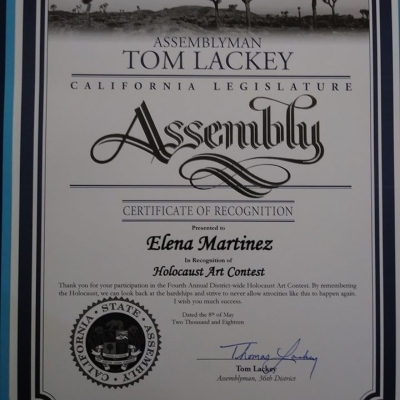
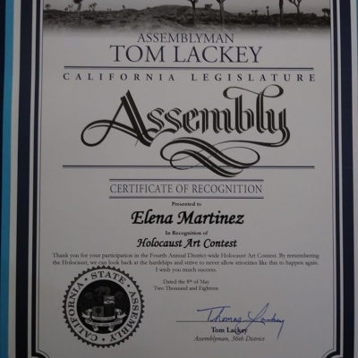

Elena Martinez
Hello, my name is Elena Martinez and I am an undergraduate student at the University of California, Riverside. I am currently double-majoring in Media and Cultural Studies and Film and Digital Production. One day I wish to pursue a career in the film-making path, with a focus on directing and producing.
Recently, I have gained experience on pitching ideas to a variety of people, some of those which have helped me create the storyboard for my first feature film. I have produced some other smaller short-films by myself, but I have found that working with more people creates better outcomes.
I really enjoy watching movies (obviously) with my friends and family. I also watch a lot of television shows and YouTube videos with them as well. This only enhances my love for my craft and inspires me to create my own material.
I have a lot of experience from high school, where I discovered my passion for creating videos. This experience includes photography, where I focused on lighting and angles, and digital editing, where I gained a lot of knowledge with programs such as adobe photoshop, illustrator, and of course premier. I was also involved in a news channel club, where I learned basic skills in directing and working on an actual set.
Since I have been in college, I have learned some other helpful skills, more specifically in screenwriting, which is opening more opportunities to network as well as strengthen some of my already-existing skills. I have been involved in a group that discusses ideas and helps build on movie pitches.
Besides that, I have other hobbies such as painting, sculpting, and sewing. I have a small online boutique that I run; however, I consider it to be another hobby rather than a side job.
In my free time I like to shop for second-hand clothing (thrifting) or spend the day in the kitchen trying out new recipes to cook or bake. I love my pet cat and all the other animals that my parents have back at home. I try to incorporate all of my hobbies into the films that I make, just so I know that I am creating something that I love out of the things that I love.
Experience
Painting Assistant
• Organized supplies into company vehicle
• Coordinated set-up area for classes
• Photographed finished paintings
• Developed and maintained company website
Student Poll Worker
• Assisted with registration of voters and sign in
• Directed voters to available poll booths
• Clarified any concerns or issues with voters
Dog Bather
• Organized and filed clientele documents for the business.
• Supervised the dogs until ready for pickup by clients.
• Maintained wellness of dogs with routine walks and meals
• Thoroughly washed and blow dried dogs
Education
University of California Riverside
University of California Riverside
Portfolio


